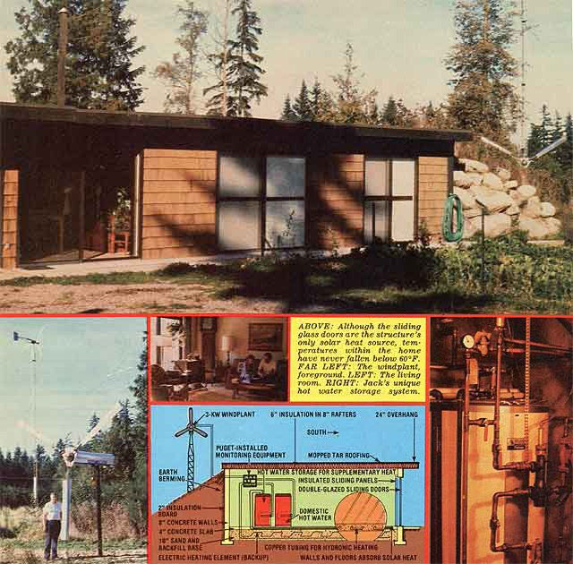

What's earth-sheltered, sun-tempered, and darn near totally energy-self-sufficient as well?
FORREST RAMBO
The prospect of being retired and having to live on a fixed income didn't bother Jack and Billie Strickler of Camano Island, Washington at all . . . until the 1973 oil embargo forced the U.S. into an era of limited energy resources and caused many people-including the Stricklers to take a long hard look at their dependence upon "outside" sources of power.
The Evergreen State couple decided that-with the cost of energy increasing at an alarming and unpredictable rate an affordable, fuel-conserving house was no longer just a good idea, but had become almost a necessity! So the good folks sat down to design an abode that was [a] mostly solar heated, [b] inexpensive to build-utilizing standard construction techniques and materials-and completely in accordance with all local building codes, [c] easy to maintain at a minimum of cost, and [d] fully compatible with several alternative technology systems that Jack had in mind. The Stricklers' dwelling was completed in July of 1976, and to date it has proven itself over the course of three harsh winter seasons.
Jack and Billie's three-bedroom, 1,536 square-foot "EVAC" (Energy at Very Acceptable Cost) house only required $122 worth of "power" last year (and no more than $32 of that figure went for heat). Better yet, the home was built for about $30,500 . . . which figures out to less than $20 per square foot (compared with the area's "going rate" of approximately $32-$35).
And while it's true that the state of Washington has the nation's lowest electrical rates (which makes it difficult to judge the efficiency of the Stricklers' structure, using a "dollars and cents" yardstick alone), EVAC has demonstrated its performance on frosty 19°F mornings when the interior drops to only 60°F without any supplemental heating.
Besides being energy-efficient, EVAC has the additional benefit of easy construction . . . while its space-saving layout makes the dwelling both highly livable and downright attractive.
Before they even considered breaking ground, the Stricklers carefully weighed their energy needs, took an accounting of their resources, and then designed their future home to suit that precise set of circumstances. But planning for an energy-conserving house wasn't enough to satisfy these folks . . . they developed and installed a 3-KW windplant, too (and even got their local utility to underwrite a portion of the home's heating system as a demonstration project!).
The Stricklers also took a hint from the early settlers of the American plains . . . who built their simple homes into sloping knolls and covered the roofs with sod. "Those 'dugouts' were easy to heat because a thick layer of earth maintains a constant temperature of about 55°F," says Jack. "In effect, the pioneers made their own caves, and we figured we could modernize the idea by designing our house to use earth berming and a passive solar heating system."
The EVAC home is based on three elementary solar design concepts: [1] siting the structure for maximum solar exposure in the winter, while providing an overhang to shade windows in the summer, [2] minimizing the exposed outer surface area to reduce heat loss, and [3] insulating the exterior surfaces to moderate temperature swings inside and to better enable the building's walls and floors to serve as heat-storage mediums. With these basic ideas carefully incorporated into the plan, Jack (a former engineer with a major aerospace company) could pretty well estimate what his supplemental energy needs would be before actually beginning construction . . . and could therefore design his alternative systems with some degree of accuracy.
Built like a daylight basement with an exposed sun-tempered, south-facing wall, EVAC is 24' wide by 64' in length. Its 8" reinforced concrete walls were cast in place at the building site and have 2" of rigid polystyrene insulation cemented to their exterior faces. The floor is a 4" concrete slab resting on an 18" base of compacted sand and dirt.
One of Jack's major design ideas was scrapped in the planning stage. "We dropped the earth-covered-roof concept for several reasons," says the builder. "First, wet dirt-and Washington is known for its rains-is heavy, so a 'turf top' would require additional supports. Second, damp earth is not a good heat insulator, which means that the roof would have to be covered with five or six inches of polystyrene insulation before the soil was piled on. Finally, the price of a reinforced concrete roof-and the stouter walls to support it-would increase the home's overall cost, and involve several times the expense of a conventional 'cover' using lightweight, but effective, insulation.
"So we chose a standard mopped tar roof of 2 X 8 rafters on 16" centers, and used 6" of standard fiberglass insulation. A 24" overhang-all along the southern wall-shades our windows from the high summer sun."
After the basic structure was complete, the Stricklers brought in a bulldozer to backfill earth to within six inches of the roof line on the north, east, and west walls. Not only does this berming temper thermal changes within the EVAC structure, but it protects the covered walls completely . . . virtually eliminating exterior maintenance. on a large portion of the house.
Another energy-saving feature is incorporated into the south wall itself, which has two 6'- and three 8'-wide double-glazed sliding patio doors that serve as a direct light and heat source for the Strickler dwelling. To control the amount of sunlight that enters the bedrooms and living area (and to prevent the loss of this thermal energy during the nighttime hours), Jack has installed a set of matching-width sliding closet doors-backed with 3/4" rigid insulation board-just inside the glass panes. These "curtains" can be easily moved to a fully or partially opened position during the day and are usually completely closed at night.
The rooms at the rear of the house-even though they aren't directly sun-tempered-receive plenty of low winter sunlight when the movable panels are open. The Stricklers have also cleverly made use of waste heat from the refrigerator (which is positioned against the north wall) to help maintain the temperature of the kitchen.
Summer ventilation has been taken into account, too. Normally, by just opening some of the sliding glass doors and the insulative panels, any natural wind flow will help keep the home comfortable. But if a spell of doldrums should set in (which isn't likely in the typically gusty Camano Island area), there are three ceiling vent fans-plus one kitchen exhaust fan-that can keep the interior air circulating for a minimun of cost.
Jack and Billie's goal was not only to build a thermally efficient structure, but also to make full use of an alternative energy system. With this in mind, Jack designed a windplant to supplement public utility power. "It'll generate 3 kilowatts in a 23-knot 'breeze', and we've just installed a 3-KW Jacobs machine for comparison. We figure our design, if mass-produced, could sell for only $1,200 . . . tower and all! "
But the windplant is just part of the story. Since power storage with a conventional generator and battery system can sometimes be a maintenance headache, Jack decided to store his breeze generated energy as heat . . . in insulated water tanks. He just connects the windplants directly to the elements in the water heaters. "I figured I could store as much energy in one 82-gallon water tank with a 100° temperature rise as I could in twenty-seven 60-amp-hour, 12-volt batteries . . . and since most of the wind-generated power was going to be used for heating water anyway, why not go direct? Besides, electric water tanks are cheaper, last a lot longer than batteries, and require no maintenance or special controls."
However, don't think for a minute that the Stricklers only use their ingenious system to provide domestic hot water . . . Jack has taken full advantage of this inexpensive source of energy by using it as supplemental heat for his home, too! Better yet, he got his local utility (Puget Power) to pay for the cost and installation of a hydronic heating system (and some monitoring equipment) . . . as part of a research and demonstration project that Puget was conducting! (Basically, the hydronic system is merely a series of copper pipes-set into the concrete slab floor-which radiate heat when high-temperature water is passed through them.) In addition, as a backup to the hydronic system, Jack included another heating mode . . . a series of resistance wires placed in the sand beneath the concrete slab.
To date, both alternative systems have been used only once . . . during checkout tests! But the Stricklers can, at least, rest assured that-even during an extended cloudy spell-they will never be without some source of heat.
Another expense was also avoided by careful planning. To replace a deepdrilled well, the Stricklers collect rainwater in a V-shaped, covered pocket which is mounted over a 25,000-gallon reservoir behind the home's north wall. The liquid is filtered, chlorinated, and stored in the reservoir . . . from which it's run through a charcoal filtration unit (to improve the taste) before being piped to the kitchen and bathrooms. Jack estimates that he and his wife could survive a two-year drought with their system . . . and-because the water is drawn by gravity feed-no pump is needed to keep the supply moving.
There's little doubt that Jack and Billie Strickler accomplished everything they set out to do, and then some! Better still, there's no reason why anyone can't duplicate the Stricklers' success-in most any part of the country-with the help of a little Yankee ingenuity. After all, it was this same spirit of independence that caused the Stricklers to build their unique sun-tempered home in the first place.
EDITOR'S NOTE: If this low-cost, solar-tempered, earth-sheltered home strikes your fancy, you'll be pleased to know that MOTHER is presently working with the Stricklers to have complete drawings-and a materials list-available for her readers by the time MOTHER NO. 59 comes out. To reserve your set, send $150 to Mother's Plans, "EVAC"' House, Dept. W, P.O. Box A, East Flat Rock, North Carolina 28726.
|
 PHOTOS BY THE AUTHOR |
|
|